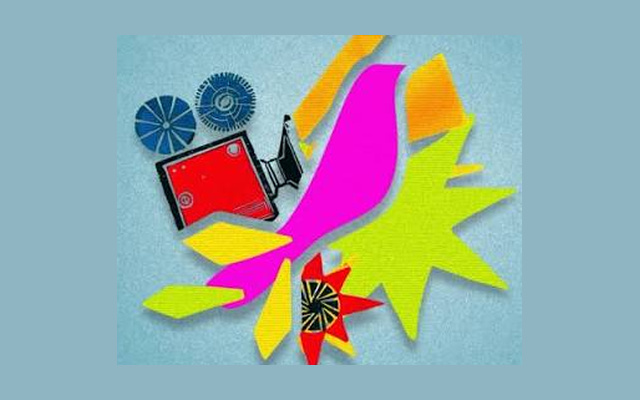
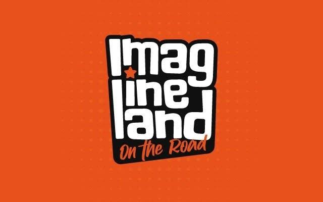
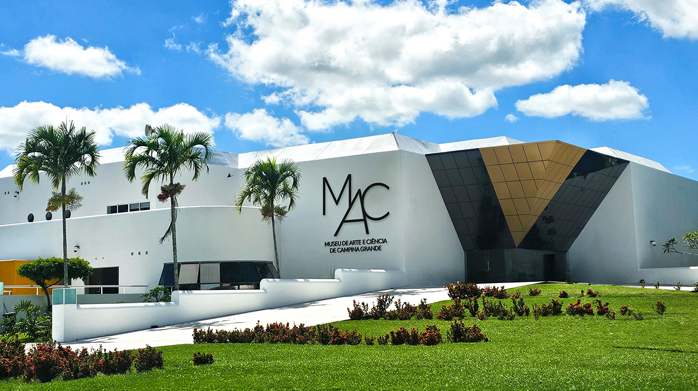
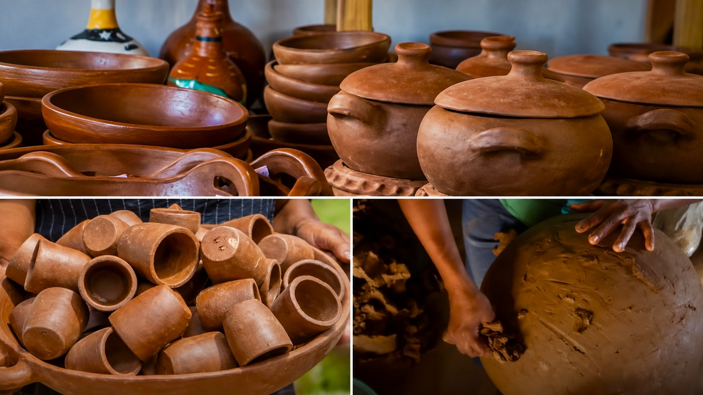
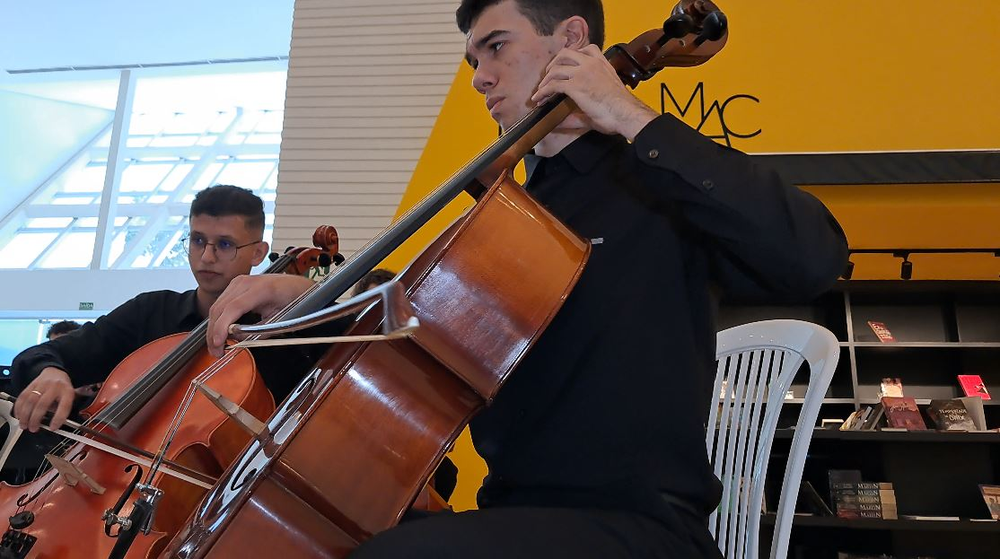

Matérias

Comunicurtas abre inscrições para sua 21ª edição
Mostras competitivas recebem inscrições até 30 de setembro. O festival acontece de 24 a 29 de novembro, em Campina Grande.

Imagineland On the Road retorna a Campina Grande em setembro
Evento será realizado de 25 a 27 de setembro no Centro de Convenções de Campina Grande. O primeiro dia terá entrada gratuita para estudantes de instituições públicas.

MAC promove ciclo de cinema dedicado à Grécia em setembro
Sessões gratuitas acontecem às sextas-feiras, às 19h, com exibição de filmes e debates sobre mito, história e cultura.

25ª Feira Cultural de Chã da Pia acontece em Areia
Evento acontece no dia 13 de setembro e reúne o trabalho das loiceiras, artesanato, gastronomia e saberes tradicionais da comunidade.

Instituto Vinciano promove circulação do cordel Pulsares: Relógios Cósmicos
Publicação passou pelo Memorial do Cordel, em Guarabira, e pela Estação do Cordel, em Natal, durante ações da Orbis 26.

Jornada aborda literatura de cordel e xilogravura em Campina Grande
Realizada na UFCG, a quarta edição do evento reuniu pesquisadores, cordelistas e artistas do Brasil e de Portugal em conferências, mesas-redondas, oficinas, minicursos e grupos de trabalho dedicados à literatura de cordel e à xilogravura.

Violonista turco Özberk Miraç Sarıgül leva trajetória internacional ao FIMQ
Em sua primeira passagem pelo Brasil, vencedor do Concurso José Tomás Villa de Petrer participou do primeiro ato do Festival Internacional de Música de Queimadas ao lado do Grupo Chorata.

Documentário sobre Anna Mariani circula por Campina Grande e revisita sua fotografia do sertão
Exibições de Anna Mariani – Anotações Fotográficas, de Alberto Renault, aproximaram o público da obra da fotógrafa e de seu olhar sobre fachadas e platibandas do sertão brasileiro.

Cidade Hades leva o mito de Orfeu e Eurídice ao palco do Teatro Severino Cabral
Espetáculo apresentado em Campina Grande buscou no universo do musical Hadestown uma nova aproximação com uma das mais conhecidas histórias da mitologia grega.

Nélida Campos lança O Que Falta é Café em Campina Grande
Em seu terceiro livro, escritora reúne contos construídos a partir de histórias ouvidas e acontecimentos observados, tendo o café como presença recorrente.

Orquestra Jovem da UFCG se apresenta no MAC
Apresentação reuniu repertório erudito e popular no Museu de Arte Contemporânea de Campina Grande.